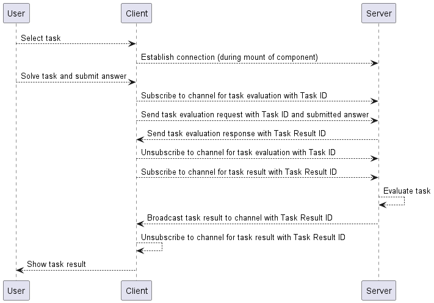

Frontend - Backend Communication
Websockets Introduction
Besides the REST endpoints generated as explained in the API implementation a major component of the frontend-backend communication is websockets. In short: Websockets are a way to establish a persistent connection between a websocket server and websocket clients. Messages can be exchanged in both directions, which allows for many use cases. However, establishing a connection is more complex than a simple HTTP request and comes with a larger overhead, which is why websockets is only used for only one case in the current implementation, which will be explained later.
Websocket Server
The websocket server is implemented using the Spring Websocket
framework in the backend. The server is implemented as a Spring bean and is configured in the WebSocketConfig class.
As with the current configuration, a connection can be established via ws://HOST-URL:8080/ws. Furthermore, there are
two important entry points:
* /app to send messages to the server
* /topic to subscribe to channels and receive messages from the server
The WebSocketController class is responsible for handling incoming messages and sending messages to the clients.
Currently there are two endpoints:
* /app/sendMessage to send a simple String message to the websocket server. This endpoint can be used for debugging purposes
* /app/fetchAssessment to request the evaluation of a submitted task. This use case is explained further later on
Websocket Client
The websocket client is implemented in the frontend part of the application. To make the usage websockets easier a
websocketService has been implemented. The service is responsible for managing the connection to the websocket server,
as well as sending and receiving messages. The websocketService makes use of following libraries:
* SockJS for connection management
* webstomp-client for support of the STOMP protocol, which is used by the websocket server
* RxJS for subscription/observer functionalities
Task Evaluation Use Case
Currently the only use case of using the websocket connection is to request the evaluation of a submitted task. Using
a simple HTTP endpoint for the request would result in a longpolling solution, since the task evaluation might take a
while. To avoid the frontend from blocking, the websocket connection is a great alternative. The websocket connection is
only established in the assessment component. On creation of the component a connection to the websocket server is
established. Once the component is unmounting the connection is closed again. Once a task has been submitted, a message
containing the task ID and the submitted answer is sent to the websocket server. The server responds with a
Task Result ID, which can be used to actually retrieve the result. For that the client subscribes to a channel for
the respective task result ID. Once the server has finished the evaluation, the result is sent to the client by
broadcasting the result to the respective channel. The client then unsubscribes from the channel and displays the result.
